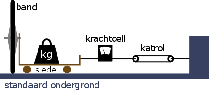
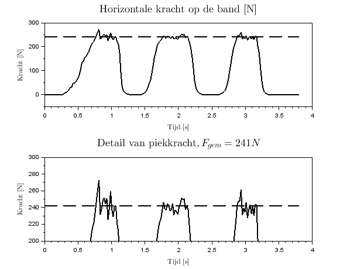
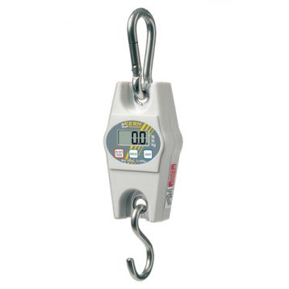

Op gladde ondergrond, bij plots remmen, in scherpe bochten en bij nat weer is goede grip van de banden op het wegdek essentiëel.
De zijdelingse dynamische wrijvingskracht bij een horizontale belasting van 200 N. Dit zowel op droge als natte ondergrond.
De band wordt op een slede geïnstalleerd en belast met gewicht steunende op een stadaard ondergrond (ruwe terastegel). Gewicht wordt toegevoegt tot de band met een kracht van 200 N op de ondergrond steund. De slede met band kan zijwaarts worden voortgetrokken met een katrol die aan een vast object wordt gemonteerd. Tussen de katrol en de slede in een krachtcell gemonteerd om de trekkracht te loggen. De spanning op de katrol wordt geleidelijk opgevoerd. Als de slede in beweging komt wordt deze even verder getrokken aan constante snelheid. Dit tot de band 0.1 m over de ondergrond is gesleept. Dit opspannen en dan slepen wordt vijf keer herhaald. In de gelogde trekkracht heeft men dan vijf pieken. Het gemiddelde van de vijf pieken is dan de trekkracht voor deze band. De meting is geldig als de vijf metingen binnen de xx % van hun gemiddelde vallen.
Na het vergelijken van testen met krachtcell en trekweegschaal blijkt de laatste optie snel herhaalbare resultaten op te leveren. Zowel piekkracht als gemiddelde kracht kan gebruikt worden als maatstaaf om banden te vergelijken. Hieronder een voorbeeld van drie slipkracht metingen waarbij de kracht gemeten is met een krachtcell en de data gelogged met Arduino.
Eenvoudiger in gebruikt dan een krachtcell is een trekweegschaal met digitale uitlezing. In het TGVelo testlabo wordt de Kern HCB 99K50 gebruikt, weergegeven in onderstaande figuur.
